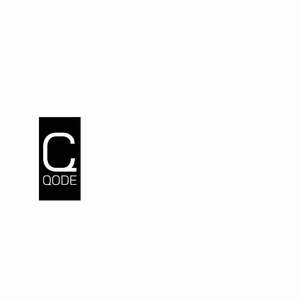
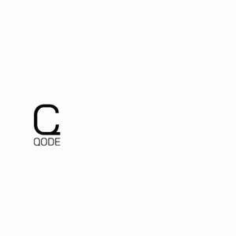

Trade Mark Journal No.2026/007 13 February 2026
UK00004309176 11 December 2025 (25)
Mark 1

Mark 2

- Class 25
- Clothing; Clothing for men; Clothing for women; Clothing for children; Clothing for babies; Formalwear; Eveningwear; Knitwear; Woven clothing; Linen clothing; Silk clothing; Woollen clothing; Cashmere clothing; Clothing of imitation leather; Latex clothing; Embroidered clothing; Bodysuits; Playsuits; Rompers; Onesies; Bottoms; Tops; T-shirts; Polo shirts; Jerseys; Jeans; Trousers; Pants; Shirts; Blazers; Dresses Jackets; Stuff jackets; Jackets being sports clothing; Windproof clothing; Rainproof clothing; Waterproof clothing; Weatherproof clothing; Water-resistant clothing; Raincoats; Parkas; Cloaks; Capes; Oilskins; Gabardines; Thermal clothing; Electrically heated clothing; Athletic clothing; Clothing for leisure; Sportswear; Shorts; Sweatpants; Sweatshirts; Hoodies; Vests; Waistcoats; Swimwear; Swimsuits; Bikinis; Swim trunks; Underwear; Underpants; Trunks being clothing; Drawers; Boxer shorts; Briefs; Panties; Bras; Brassieres; Adhesive brassieres; Corsets [foundation garments]; Bandeaux; Pyjamas; Nightgowns; Nightshirts; Bathrobes; Dressing gowns; Belts; Fabric belts; Braces for clothing; Ties; Bow ties; Scarves; Shawls; Stoles; Pocket squares; Kerchiefs; Bandanas; Neck tubes; Gaiters; Cowls [clothing]; Veils [clothing]; Hoods [clothing]; Collars; Pockets for clothing; Wristbands; Handwarmers [clothing]; Muffs; Gloves; Heated gloves; Mitts; Mittens; Hosiery; Tights; Stockings; Socks; Electrically heated socks; Footwear; Shoes; Sneakers; Training shoes; Running shoes; Boots; Loafers; Dress shoes; Sandals; Bath sandals; Espadrilles; Flip-flops; Slippers; Beach shoes; Sports shoes; Athletic footwear; Boots for sports; Soles for footwear; Headgear; Hats; Caps; Beanies; Berets; Visors; Sun hats; Turbans; Headbands.
Cynthia Lima D'Assuncao